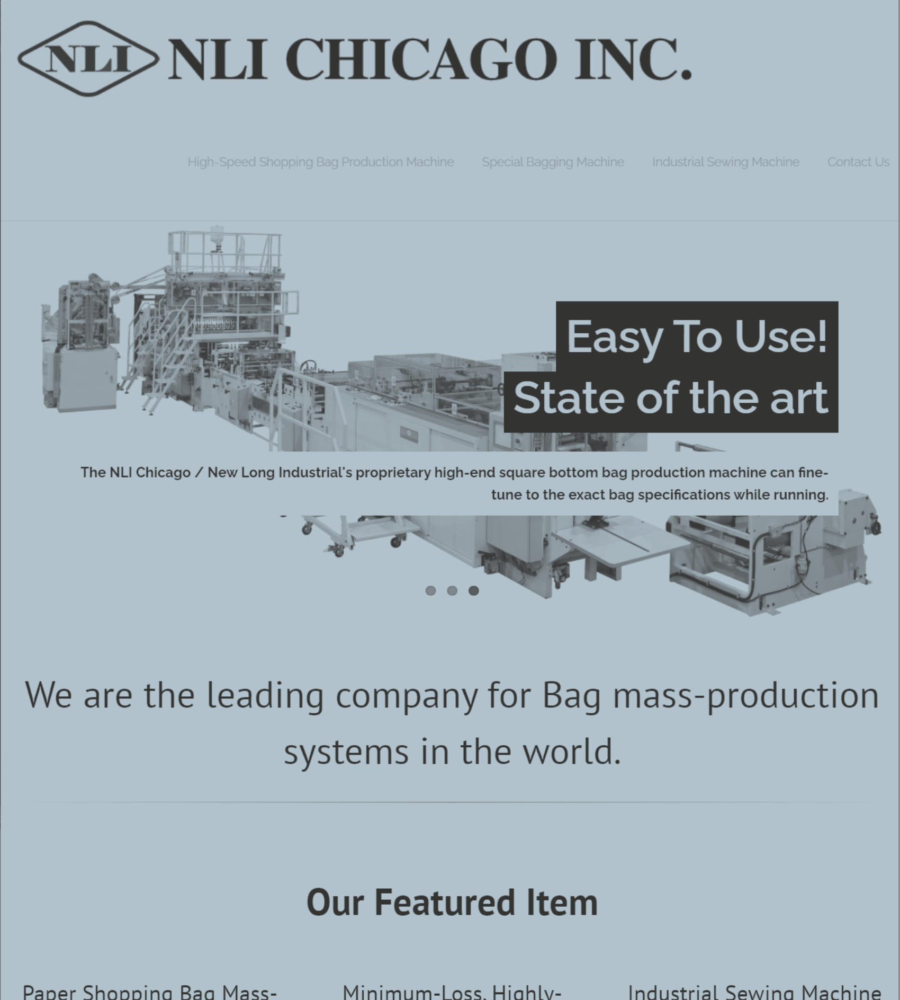

Things I've developed, in no particular order
The First Project
This web project is built using WordPress. However, the server load time is currently an issue and it may be necessary to migrate it to a virtual server.
The Second Project

This is a Windows-based thick client application built with C#. To measure the market, I implemented astronomical cycle calculations using a C++ dynamic link library (DLL) ephemeris for complex calculations. To ensure a non-cluttered monitor space for traders, I sized the application to be similar in size to an iPhone.
My next project is to migrate these desktop applications to a subscriber-based web application.
The Third Project

This is a website featuring ads for one of the programs I sold on the iPhone app.